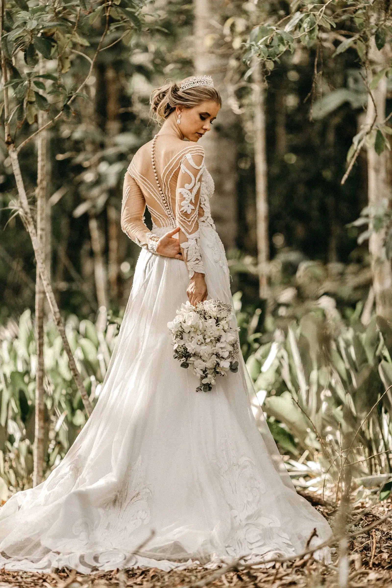
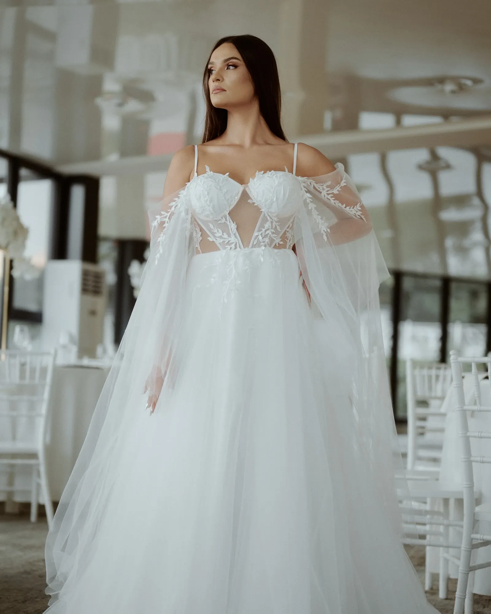
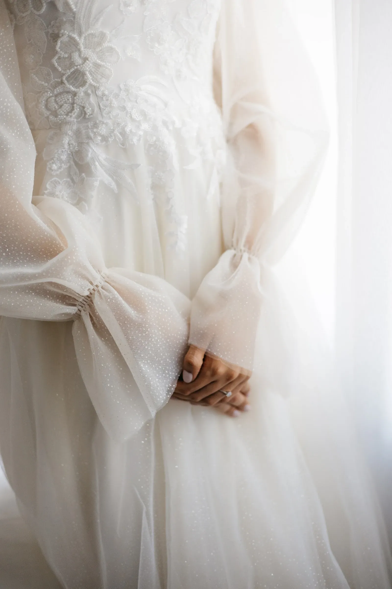
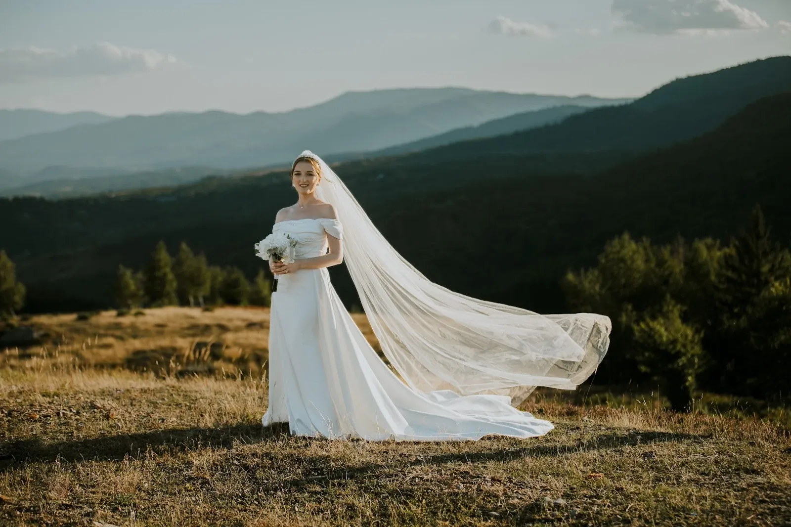
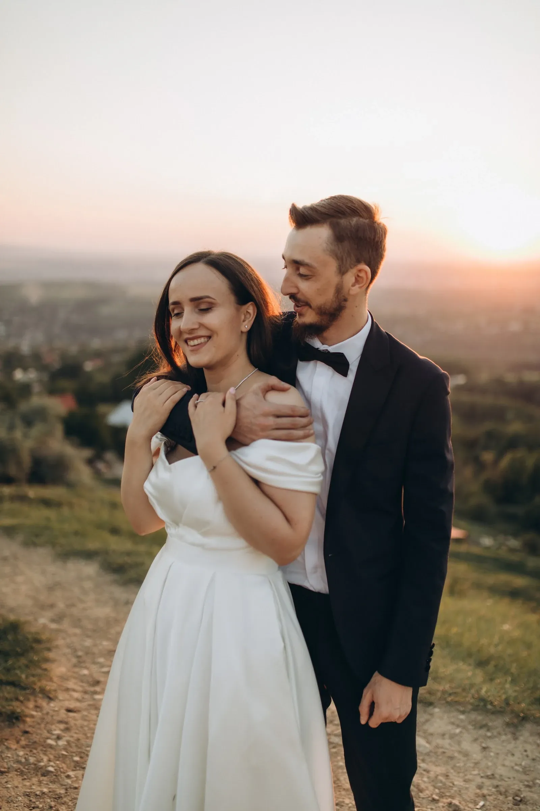
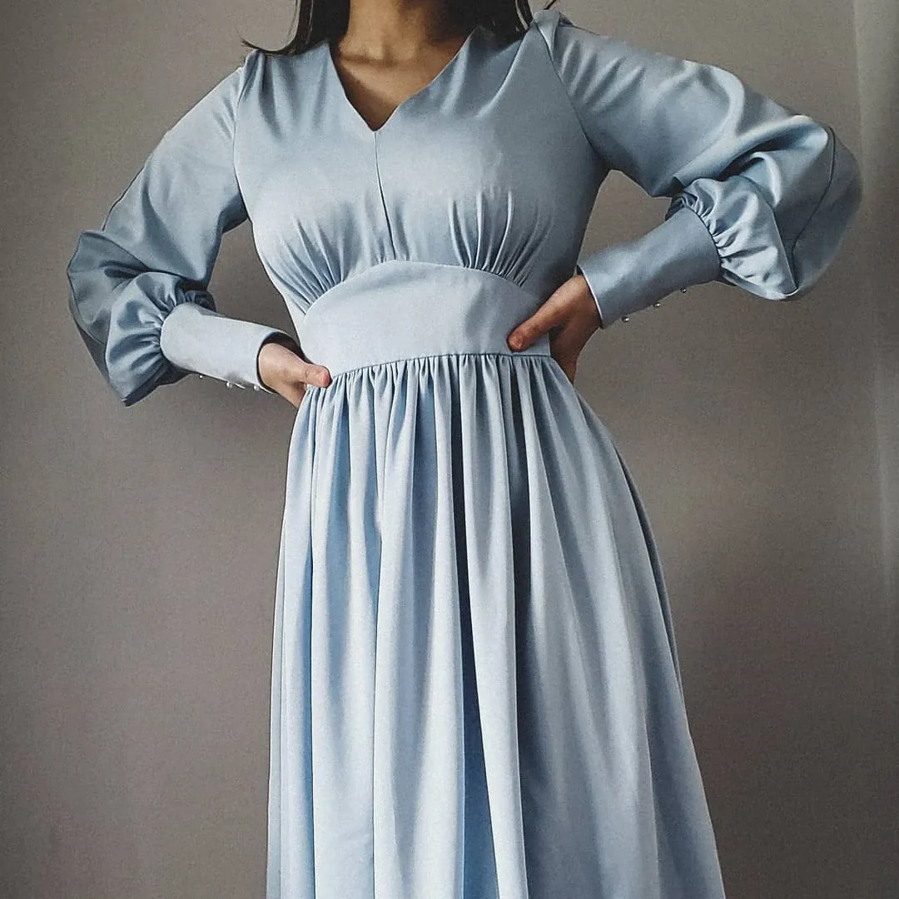
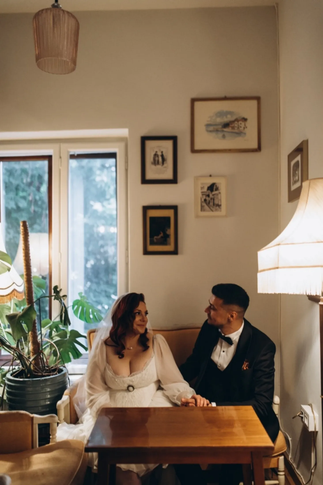
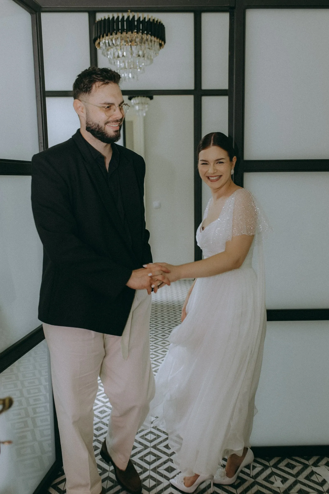

{{Str. Iordachi Lozonschi 5 · Iași|Str. Iordachi Lozonschi 5 · Iași|Str. Iordachi Lozonschi 5 · Iași}}
{{Rochia ta|Your dress,|O teu vestido,}}{{pe măsura ta,|to your measure,|à tua medida,}}{{nu invers.|not the other way round.|não o contrário.}}
{{Forma e un atelier de rochii de mireasă din Iași. Vii la probă cu data nunții și cu o idee; plecăm de la măsurile tale și de la cum vrei să te miști în ziua aceea.|Forma is a bridal atelier in Iași. Come to a fitting with your wedding date and an idea; we start from your measurements and from how you want to move on the day.|A Forma é um ateliê de vestidos de noiva em Iași. Vens à prova com a data do casamento e uma ideia; partimos das tuas medidas e de como te queres mexer nesse dia.}}
5,0{{nota pe Google|rating on Google|nota no Google}}

{{din atelier|from the atelier|do ateliê}}
{{Fiecare rochie, o piesă a ei.|Every dress, a piece of its own.|Cada vestido, uma peça só sua.}}
{{Dantelă pe spate, tul cu aplicații, satin pe umeri, mâneci strânse la încheietură. Detaliile de mai jos sunt din fotografiile atelierului.|Lace down the back, tulle with appliqué, satin off the shoulder, sleeves gathered at the wrist. The details below come from the atelier’s own photos.|Renda nas costas, tule com aplicações, cetim sobre os ombros, mangas franzidas no pulso. Os detalhes abaixo são das fotografias do próprio ateliê.}}






{{înainte de probă|before the fitting|antes da prova}}
{{Ce să ai cu tine la probă|What to bring to the fitting|O que levar à prova}}
- {{Data nunții|The wedding date|A data do casamento}}{{De la ea se socotește tot restul: când e proba următoare și când iei rochia acasă.|Everything else is counted back from it: the next fitting and when the dress goes home.|Tudo o resto conta-se a partir dela: a prova seguinte e quando o vestido vai para casa.}}
- {{Pantofii din ziua nunții|Your wedding-day shoes|Os sapatos do dia}}{{Sau măcar înălțimea tocului: lungimea rochiei se ia cu ei în picioare.|Or at least the heel height: the hem is measured with them on.|Ou pelo menos a altura do salto: o comprimento mede-se com eles calçados.}}
- {{Măsurile, dacă le știi|Your measurements, if you know them|As medidas, se as souberes}}{{Bust, talie, șold. Le poți trece în formularul de mai jos; dacă nu, nu-i nimic.|Bust, waist, hips. You can add them in the form below; if not, that’s fine.|Peito, cintura, anca. Podes pô-las no formulário abaixo; se não, não faz mal.}}
- {{Două-trei fotografii care îți plac|Two or three photos you love|Duas ou três fotos de que gostes}}{{Un spate, o mânecă, un voal. E mai ușor de arătat decât de descris.|A back, a sleeve, a veil. Easier to show than to describe.|Umas costas, uma manga, um véu. É mais fácil mostrar do que descrever.}}

{{programare|booking|marcação}}
{{Programează proba|Book your fitting|Marca a tua prova}}
{{Completezi în două minute, iar cererea pleacă spre atelier pe WhatsApp sau prin SMS, de pe telefonul tău. Ora exactă o stabiliți la telefon.|Two minutes to fill in; the request goes to the atelier by WhatsApp or SMS, from your own phone. You agree the exact time on the phone.|Preenche-se em dois minutos e o pedido segue para o ateliê por WhatsApp ou SMS, do teu telemóvel. A hora exata combina-se ao telefone.}}
{{atelierul|the atelier|o ateliê}}
{{Lozonschi 5, Iași|Lozonschi 5, Iași|Lozonschi 5, Iași}}
- {{Adresă|Address|Morada}}Strada Iordachi Lozonschi 5, 700063 Iași
- {{Telefon|Phone|Telefone}}0770 544 185
- {{Program|Hours|Horário}}{{Zile și ore:|Days and hours:|Dias e horas:}} {{de confirmat|to be confirmed|a confirmar}}
- Google5,0
- {{Cod Plus|Plus Code|Plus Code}}5H6J+XF Iași
{{Harta se încarcă doar când o ceri.|The map only loads when you ask for it.|O mapa só carrega quando a pedir.}}
{{Deschide în Google Maps|Open in Google Maps|Abrir no Google Maps}}